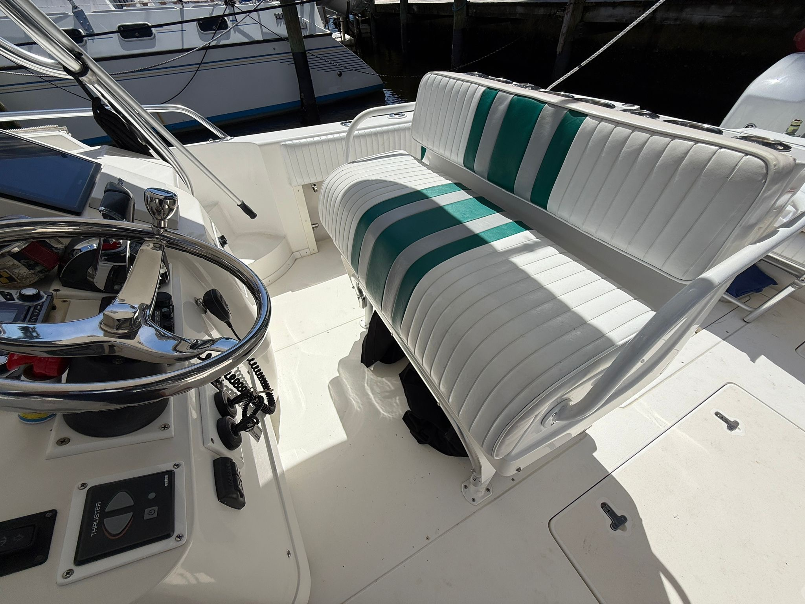
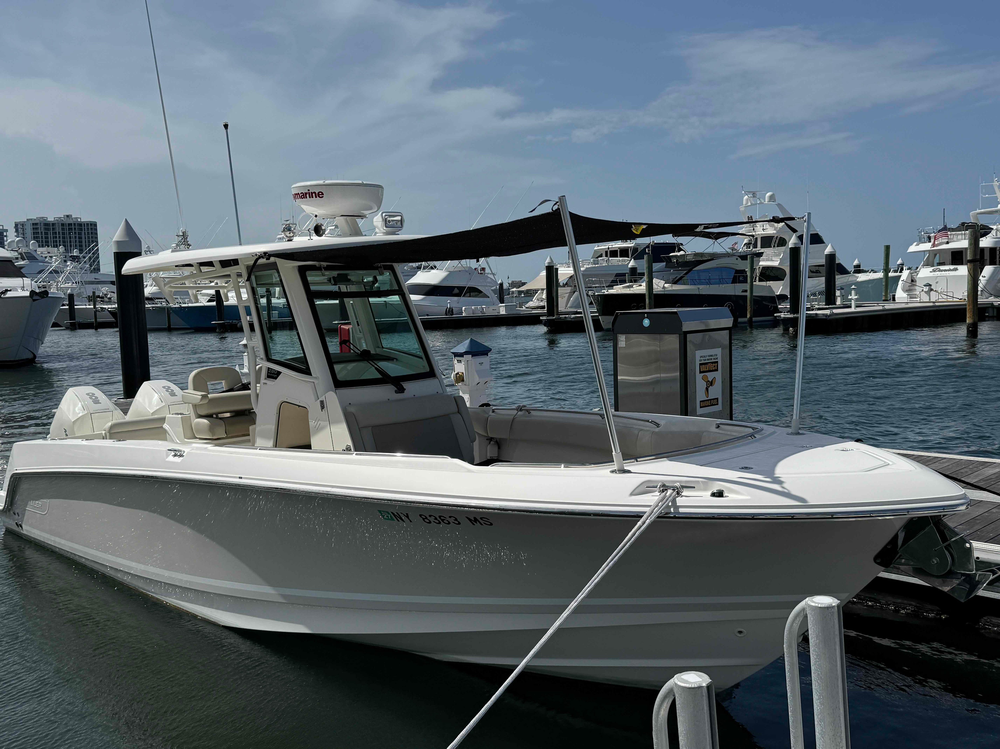

Good Morning. When Jan asked me to say a few words about Bill, I was truly honored and accepted immediately, but later I told my wife, “How am I ever going to get through this without blubbering like a baby!” Perhaps I won’t be able to avoid it, but we are here to celebrate the life of a wonderful husband, a great father, a fantastic friend, and an engaged citizen and I’m going to do my best to get through this with joy in my heart for my friend Bill Baumann.


I met Bill a number of years ago when my son joined Boy Scout Troop 285. Bill’s son John was the patrol leader of the Cougar Patrol at the time and while John was trying to teach Patrick how to be a good scout, Bill taught me how to be a Scout Dad. He taught by example and I did my best to emulate him. He was a willing volunteer, a friend and mentor to the other Dads, and beloved by the kids in the troop.
I remember one time, we were camping at Camp Faucett near Barksdale. Faucett has a beautiful swimming hole on the bend of the river. I couldn’t wait to get in to that cool, clear water and as soon as I’d finished my chores I through on my trunks and headed down to the river. I could hear kids screaming and laughing and as I rounded the bend, there was Bill with 10-15 kids surrounding him. He was truly in his element!
Through scouts, Bill and I had the opportunity to camp, hike, and canoe together on many occasions – quite often we were tent mates and I can attest that you really get to know a person when you’re living in a 5 x 7 tent! I looked forward to those scout adventures and when our boys graduated and left the scouting program, I was happy that our friendship continued through our love of the outdoors.
We continued backpacking together on “adult trips.” Bill loved those trips and every time we completed one adventure, we would start planning the next. Fitting these trips in to family and work schedules was a challenge – but it was always worth the effort.
Some of you may not know that Bill also had a love for boating and being on the open ocean. In this we shared another interest. Bill was a regular crew for me on my sailboat and together we sailed across the Gulf of Mexico between Texas and Florida several times – distance of some 700-800 miles. Whenever Bill came aboard my boat, he would immediately assume the role of Galley Chief. The galley, for those of you that may not know is the “Kitchen” on a boat. Bill was in charge and would never let anyone else in to his Galley – even when the weather was rough – he would always prepare meals. The running joke in my family is that Bill and my Wife Michelle could never be on the boat at the same time because they would fight over who was in charge of the galley.
When you’re Sailing in the ocean, backpacking in New Mexico, or Canoeing in Canada, there are times that are absolutely magical -- that’s what we go out there for -- but there are also times where things don’t go right and conditions make us totally miserable. In all the time we spent together through the years, Bill never lost his love for life and adventure and he never stopped smiling. Bill saw the good in everything and everyone and he made those tough times bearable for the rest of us.
I could go on for hours talking about our many adventures and the insights that he shared and the love he had for his family, but I’ll close by saying that Bill Baumann lived every day of his life by the Boy Scout Law. He was Trustworthy, Loyal, Helpful, Friendly, Courteous, Kind, Obedient, Cheerful, Thrifty, Brave, Clean, and Reverent…And he was my friend…and I intend to honor his life by following the same law.
Thank You.